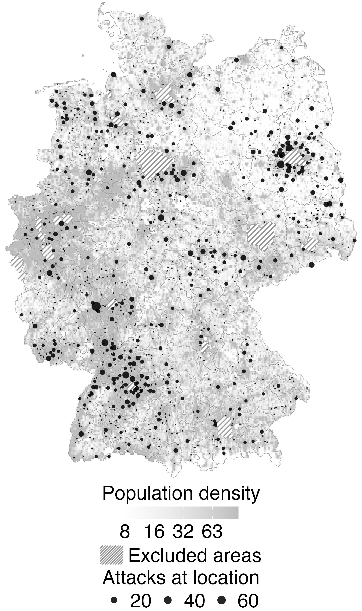
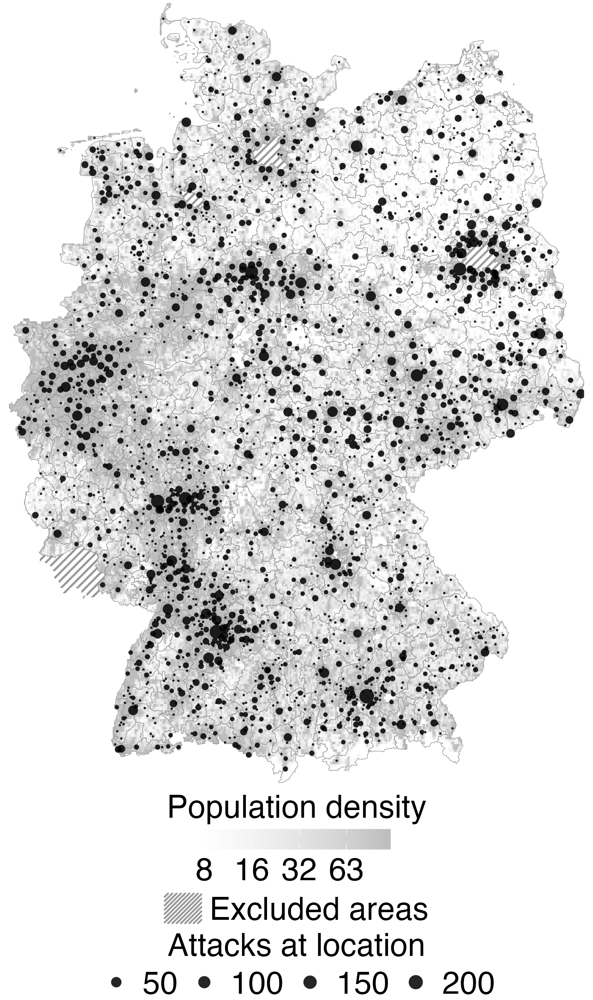
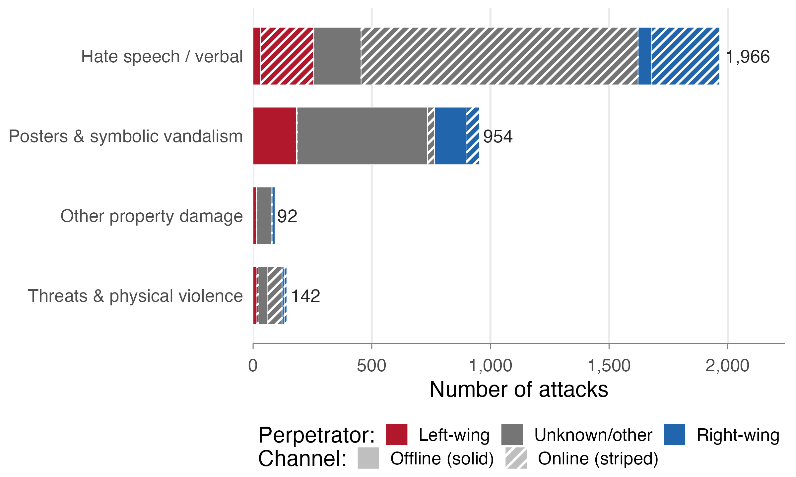
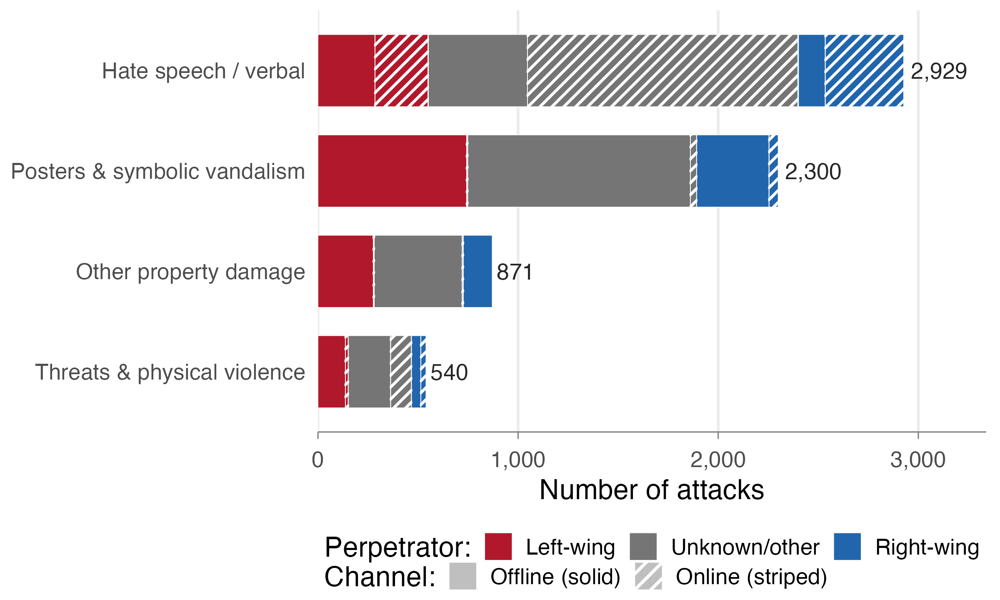
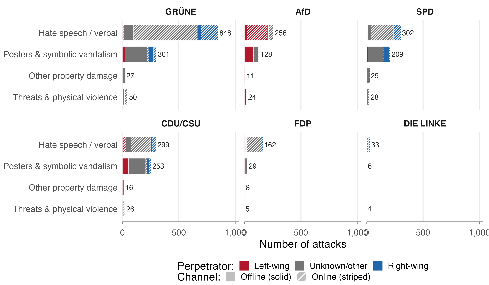
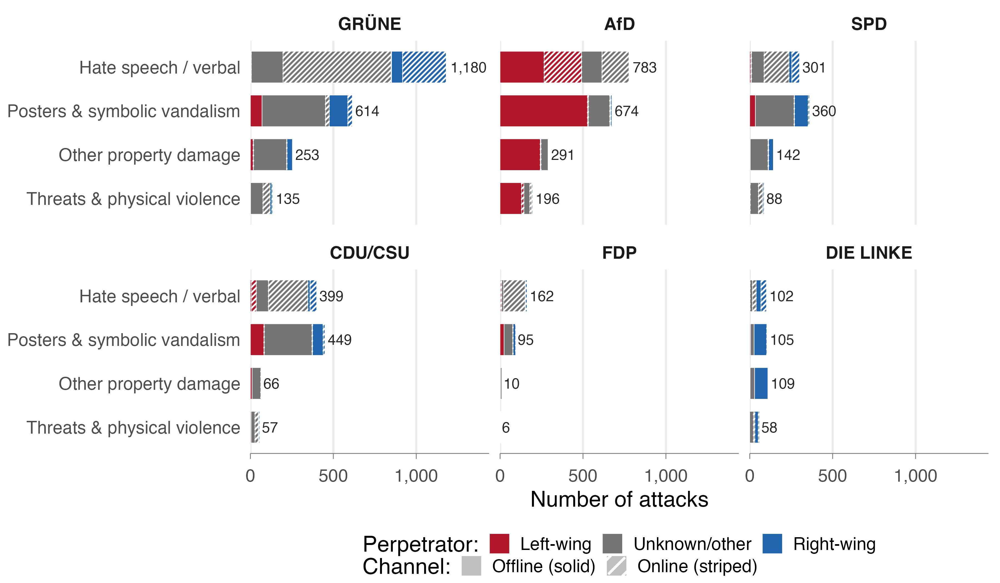
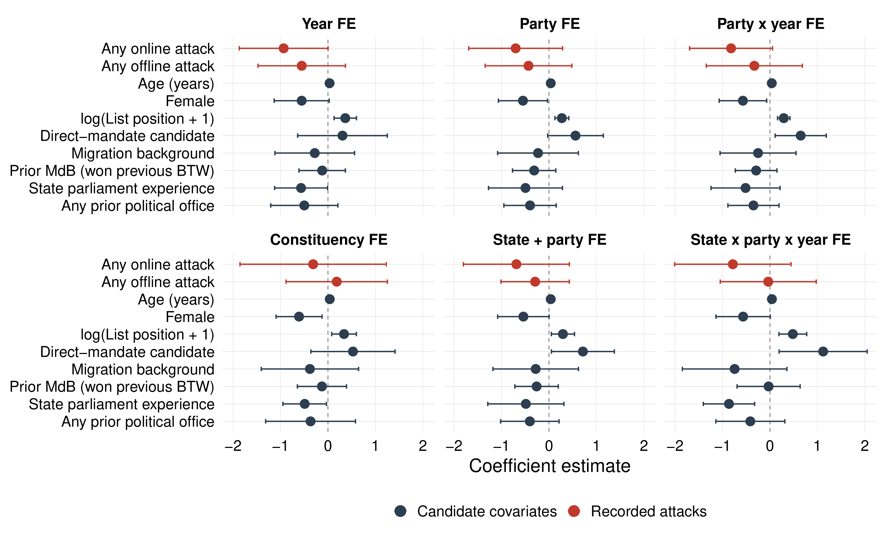
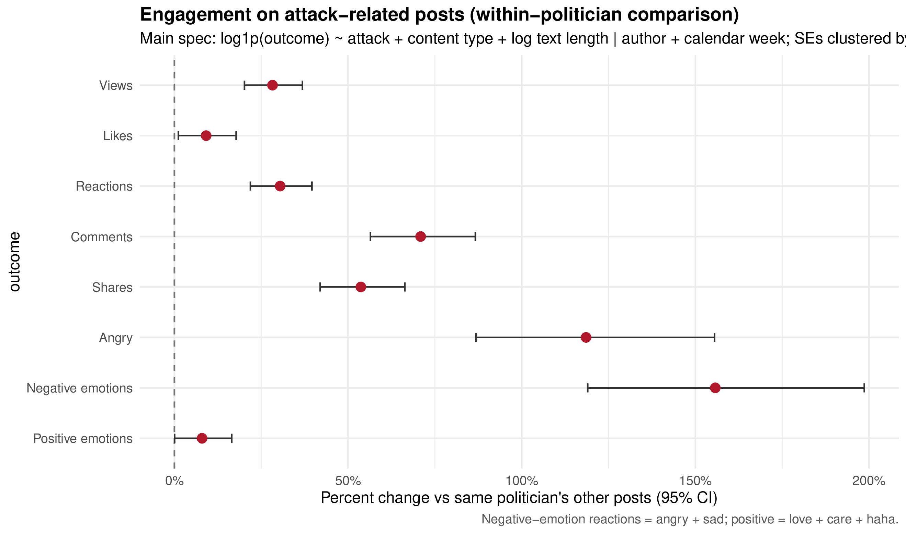
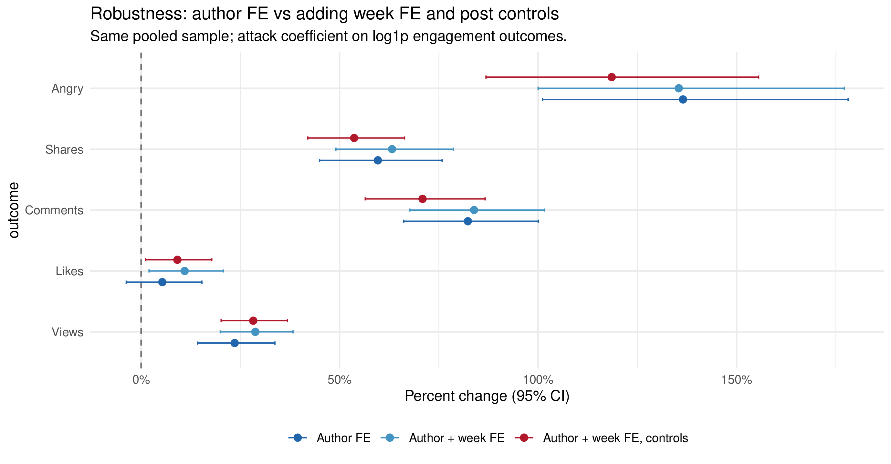
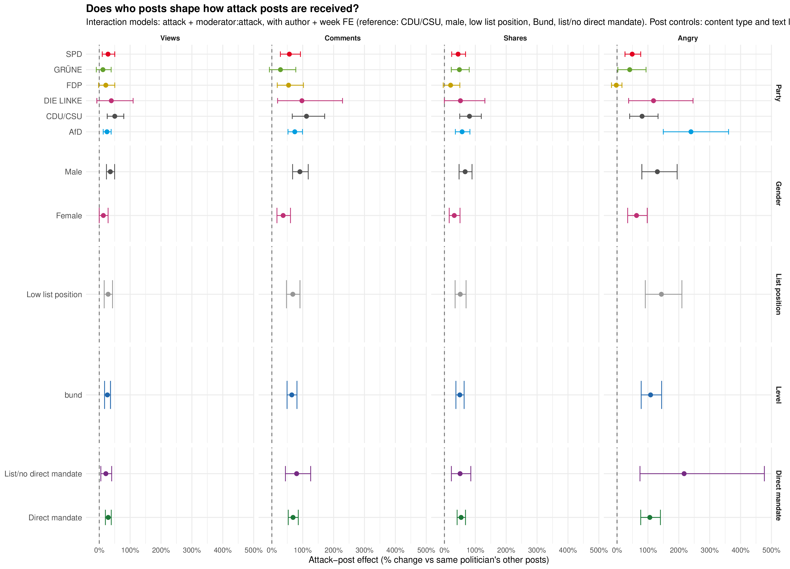

Attacks Against Politicians in Germany, 2021–2025
Witten/Herdecke University
Hertie School
(Data Science Lab/DYNAMICS)
June 19, 2026
Linked sources
Appendix: Examples from the records
Appendix: Static maps
GLES 2021 + 2025 × attacks (N = 1,047)
Appendix: Perceived security Full GLES specifications
Within-politician estimates: percent change in engagement on attack-related posts vs. the same politician’s other posts (author + week FE; pooled reference in diamonds)
Appendix: Pooled estimates Robustness Heterogeneity
Cornelius Erfort · cornelius.erfort@uni-wh.de
Elias Koch · e.koch@hertie-school.org
29.03.2022
Gera
Property damage · Party premises · The Left · Offline
Unknown perpetrators threw a stone at the shop window of the Die Linke constituency office and damaged the outer pane.
27.02.2023
Leipzig
Threat · Party premises · FDP · Mail
The FDP district office received a postcard by mail. Text: “If your war comes here, we’ll kill you. Period.”
12.06.2024
Lüchow
Insult · Party premises · SPD · In person
The accused entered an SPD MP’s office and insulted a staff member with the words “idiot”, “pig” and a homophobic slur; the insults were also directed at the openly gay MP.
Source: parliamentary inquiries (Kleine Anfragen).

Federal targets (n = 1,968)

All targets (n = 7,874)
Federal
targets; dashed lines = federal elections
State
sample; grey bars = covered legislative periods
Federal

State

Verbal/online hate speech dominates; threats & physical violence are rare – left- and right-wing perpetrators use similar repertoires


(a) Federal targets, 6 months pre-election
(b) All targets through GLES field end




Erfort & Koch · Mapping Hostility and Its Reception · EPSS 2026